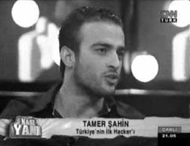

Sürekli basında yer alıyordum. Medya çalışanları yaptıklarımı programlarında işlemek, hacker’ları ilgilendiren güncel konuları değerlendirmek gibi sebeplerle sık sık kapımı aşındırıyordu. Bir ara Coşkun Aral ekibini gönderip hacker’ları ve benim yaşamımı konu alan bir belgesel çektirmişti. Bu belgesel defalarca İz TV belgesel kanalında yayınlandı. Eşin dostun arayıp “Yine televizyondasın” demesi garip bir duyguydu. Medyanın pırıltılı dünyasına girdikten sonra vazgeçmenin pek kolay olmayacağının habercisi gibiydi.
Beyazıt Öztürk o sıra CNN-Türk’te Güven Kıraç ile beraber bir talk-show programı yapıyordu. Büyükçe yuvarlak bir masa etrafında insanların toplaşıp birbirlerinin sözünü keserek konuştukları programlardan... Aslında bırakın o insanları, belki de programı hazırlayanların bile suçu değildi bu. Bizde talk-show formatı bu şekilde gelişmişti. Beyaz, ailemizin çocuğu kıvamında esprilerle programı doldururken, Okan sürekli “Hep ben anlatayım, herkes beni dinlesin” derdindeydi. Jay Leno ya da Conan O’Brein gibi, konukların program için özel olarak hazırlanıp gelerek anlattıklarıyla seyirciyi güldürdüğü, çoğunlukla konuğun konuştuğu bir formatı görmek bize halen epey uzak.
Davet edildiğimde önce her zamanki gibi diğer konukların kimler olduğunu sordum. Helin Avşar, Cem Mumcu, Ceyhun Yılmaz, Facebook grubu olan bir kız ve bir arkadaşlık sitesi sahibi, konuklar arasındaydı. Diğerlerini tanımasam da Helin’le epeyi önceden tanışıyorduk. En azından Helin’le dalga geçip makara yapılabilecek bir durum vardı ortada.
CNN-Türk binasına gittiğimde danışmada Uğur Dündar’la karşılaştım. Daha önce yüz yüze gelmemiştim. Gerçi karşı karşıya dursak yine yüz yüze gelemezdik. İnanılmaz uzun boylu bir adammış. O zaman daha iyi anlamıştım; baskın yaptığı ekmek fırınlarında bu adama niye saldıramadıklarını.
Kısa bir prosedürden sonra yukarıya çıktım. Kerbela gibi olan konuk odalarının aksine CNN-Türk’ün konuk odasında her çeşit içecek ve atıştırmalık mevcuttu. Odaya benden önce gelen tanımadığım kişi arkadaşlık sitesinin sahibi olmalıydı. Bir süre sonra Facebook’ta “80’lerin sonunda 90’ların başında çocuk olmak” adında bir sayfa sahibi olan kız geldi.
İkisinin de ilk televizyon yayınıydı belli ki. Çekingen, biraz da içine kapanık şekilde oturuyorlardı. Biraz sohbet etmeye çalışsam da beklediğim performansı alamadım. Bir süre sonra içeriye Cem Mumcu, ardından da mini etekli bir kızla beraber Ceyhun Yılmaz girdi. Bir özgüven gösterisi yaparcasına hepimizle gülümseyerek el sıkıştıktan sonra bir köşeye oturdu. Ceyhun “Ne istersiniz” diye soran görevliye ortamdaki sıcaklığı eksi derecelere düşüren “Şarap ve kadın... Hahaha!” esprisini yapınca gecenin ne kadar uzun süreceğini düşündüm. Yanındaki kadını “Asistanım” diye tanıtmıştı.
Kız bana dik dik bakarak, saçlarını yüzüme savururcasına yanıma oturdu. Parfüm kokusundan hapşırmamak için kendimi zor tutuyorken içeriye Helin girdi. Herkesi selamladıktan sonra beni gördüğünde duraksadı ve “Aaa aaaa heykııırrrrrrcımm!” diyerek bana doğru gelip sarıldı.
Ekip tamam gibiydi, artık yayına hazırdık. Konukları sırayla içeriye alacaklarken Ceyhun yine buzdolabında unutulmuş esprilerinden örnekler sunuyordu. Facebookçu kız, Ceyhun’u tanımamıştı. Utana sıkıla tanımadığını söylediğinde ben “Nasıl Ceyhun Abimizi tanımazsın? Abi emret dışarı atayım bu kızı, olacak iş değil!” dedim. O, bu tepkimi ciddi gibi algılayınca yüzünde bir anda kocaman bir şaşkınlık belirdi. Özgüveninden sıyrıldığı o anlarda aniden “Estağfurullah, tanımayabilir yani” diye karşılık verdi.
Yayının başlamasına az bir süre varken Beyaz çok gergin gözüküyordu. Gelip bizi selamladıktan sonra makyaj odasına gitmişti. Sonrasında da pek fazla görünmemişti, sadece arada bir ortada telaşlı biçimde dolaştığını fark etmiştim. Yıllardan beri canlı yayına çıkıp, hâlâ bu kadar gergin olması ilginç gelmişti. Tüm konuklar birkaç dakika arayla teker teker yayına alındıktan sonra bir tek ben ve Cem Mumcu kalmıştık geriye. Cem bana dönüp “Niye bu kadar geç kaldılar yahu?” diye sordu. Ben de durumu biraz daha abartıp “Daha makyajınız bile yapılmadı. Hadi ben sizden sonra çıkacağım.

CNNTürk. Beyazıt Öztürk ve Güven Kıraç’ın sunduğu “Nasıl Yani” programı.
Ama sizin makyajınız bitmeliydi. Galiba unuttular” dedim. Çok bilmiş psikoloğumuz biraz strese girmiş, odada volta atmaya başlamıştı. Manipülasyona bu derece açık olması beni eğlendirmişti.
Voltasına yeni başlamıştı ki yayına alındı. Sonrasında ise ben “Alkışlarla Türkiye’nin ilk hacker’ı geliyor, Tamer Şahin!” sunumuyla masadaki yerimi aldım. Program, “konuk mezbahası” şeklinde ilerleyen klasik talk-show’lardan olduğundan ortada bir sürü konuk vardı. Herkes damdan düşercesine sohbete katılarak bir şekilde ön plana çıkmaya çalışıyordu. Ben bu tarzı hiç sevmediğimden ilk yarı pek fazla konuşmayı tercih etmedim. Ara verdiğimizde Beyaz bana dönüp “Abi konuşsana. Hiç söz bekleme direkt gir olaya yani” dediğinde oyunu kuralına göre oynamam gerektiğini anladım.
Beyaz’ın reklam arasında anlattığı hikâye belki programın kendisinden bile komikti:
Beyaz, internetin henüz yeni yeni yayıldığı yıllarda bir gece sohbet odasının birinde kızın tekiyle konuşurken konu dönüp dolaşıp nickname’lerin ardındaki gerçek isimlere gelir. Beyaz der ki “Ben televizyon sektöründe çalışıyorum.” Karşıdaki kız tamamlar “Ciddi olamazsın ben de televizyon sektöründeyim.” Beyaz “Ben kamera önündeyim” der. Kız cevap verir “Ben de kamera önündeyim.” Artık Beyaz iyice şaşkınlık içerisinde kalarak “Tamam o zaman birbirimize karşı dürüst olalım ve kimliklerimizi açıklayalım. Var mısın?” diye teklifte bulunur. Bunu kabul eden kız “Tamam önce sen açıkla” der. O “Ben Beyazıt Öztürk’üm” der. Karşıdaki kız ise “Beyazıt, ben Savaş Abin... Savaş Ay...” diye cevap verir.
Beyaz’ın yorumu hikâyesinden de müthişti: “Ulan herkes internete girer karı kız düşürür, bize düşe düşe sakallı Savaş Ay düştü anasını satayım! O gün bugündür internete güvenmem!”